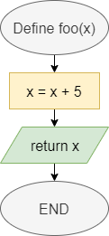

Functions
In Java, each piece of code is broken down into functions, which are individual routines that we can call in our code. Let’s review how to create functions in Java.
Functions in Flowcharts & Pseudocode
The table below lists the flowchart blocks used to represent functions, as well as the corresponding pseudocode:
| Operation | Flowchart | Pseudocode |
|---|---|---|
| Declare Function |  | |
| Call Function |

|
|
Functions in Java
Declaring Functions
In general, a function declaration in Java needs a few elements. Let’s start at the simplest case:
static void foo(){
System.out.println("Foo");
return;
}Let’s break this example function declaration down to see how it works:
- First, we use the keyword
staticat the beginning of this function declaration. That keyword allows us to use this function without creating an object first. We’ll cover how to create and work with objects in a later module. For now, each function we create will need thestatickeyword in front of it, just like themain()function. - Then, the second keyword,
void, determines the type of data returned by the function. We use a special keywordvoidwhen the function does not return a value. We’ve already seen this keyword used in our declaration of themainfunction. - Next, we have the name of the function,
foo. We can name a function using any valid identifier in Java. In general, function names in Java always start with a lowercase letter. - Following the function name, we see a set of parentheses
()that list the parameters for this function. Since there is nothing included in this example, the functionfoodoes not require any parameters. - Finally, we see a set of curly braces
{}that surround the code of the function itself. In this case, the function will simply printFooto the terminal. - The function ends with the
returnkeyword. Since we aren’t returning a value, we aren’t required to include areturnkeyword in the function. However, it is helpful to know that we may use that keyword to exit the function at any time.
Once that function is created, we can call it using the following code:
foo();Parameters and Return
In a more complex case, we can declare a function that accepts parameters and returns a value, as in this example:
static int countLetters(String input, char letter){
int output = 0;
for(int i = 0; i < input.length(); i++){
if(input.charAt(i) == letter){
output++;
}
}
return output;
}In this example, the function accepts two parameters: input, which is a string, and letter, which is a character. It also declares that it will return an int value.
We can use the parameters just like any other variable in our code. To return a value, we use the return keyword, followed by the value or variable containing the value we’d like to return.
To call a function that requires parameters, we can include values as arguments in the parentheses of the function call:
sum += countLetters("The quick brown fox jumped over the lazy dog", 'e');